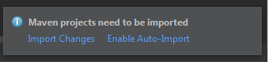
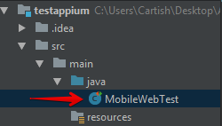
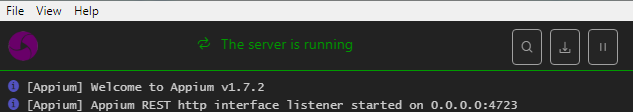
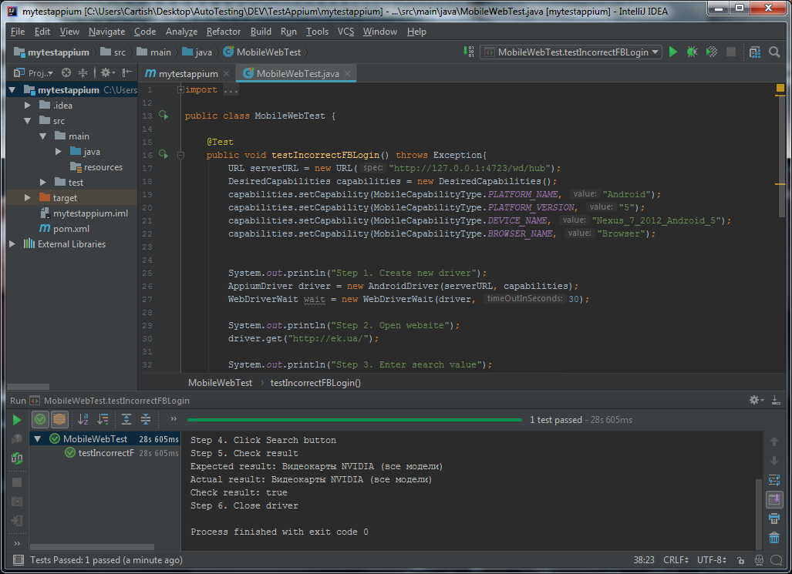

Выполнение теста в IntelliJ IDEA
Для выполения тестов используем Java и среду разработки IntelliJ IDEA
Скачайте и установите IntelliJ IDEA который находится по адресу: https://www.jetbrains.com/idea/
1. Создайте проект
Нажмите на кнопку Create New Project
Выберите Maven и укажите путь к JDK в поле Project SDK. Нажмите Next.

Укажите имя группы и артифакт, а так же версию. Нажмите Next.

Укажите имя проекта и путь где проект будет располагаться. Нажмите Finish.

Включите функцию Enable Auto-Import для автоматической подгрузки библиотек

2. Подключите библиотеки

Описание файла pom.xml
Информацию о Java Client можно получить по адресу: http://mvnrepository.com/artifact/io.appium/java-client
Информацию о JUnit можно получить по адресу: http://mvnrepository.com/artifact/junit/junit
Информацию о Selenium Java можно получить по адресу: http://mvnrepository.com/artifact/org.seleniumhq.selenium/selenium-java
<?xml version="1.0" encoding="UTF-8"?>
<project xmlns="http://maven.apache.org/POM/4.0.0"
xmlns:xsi="http://www.w3.org/2001/XMLSchema-instance"
xsi:schemaLocation="http://maven.apache.org/POM/4.0.0 http://maven.apache.org/xsd/maven-4.0.0.xsd">
<modelVersion>4.0.0</modelVersion>
<groupId>com.somov</groupId>
<artifactId>test-appium</artifactId>
<version>1.0-SNAPSHOT</version>
<build>
<pluginManagement>
<plugins>
<plugin>
<groupId>org.apache.maven.plugins</groupId>
<artifactId>maven-compiler-plugin</artifactId>
<configuration>
<source>1.8</source>
<target>1.8</target>
</configuration>
</plugin>
</plugins>
</pluginManagement>
</build>
<dependencies>
<dependency>
<groupId>junit</groupId>
<artifactId>junit</artifactId>
<version>4.12</version>
</dependency>
<dependency>
<groupId>org.seleniumhq.selenium</groupId>
<artifactId>selenium-java</artifactId>
<version>3.9.1</version>
</dependency>
<dependency>
<groupId>io.appium</groupId>
<artifactId>java-client</artifactId>
<version>5.0.4</version>
</dependency>
</dependencies>
</project>
3. Создайте скрипт выполняющий тестирование

Описание файла MobileWebTest
import io.appium.java_client.AppiumDriver;
import io.appium.java_client.android.AndroidDriver;
import io.appium.java_client.remote.MobileCapabilityType;
import org.junit.Assert;
import org.junit.Test;
import org.openqa.selenium.By;
import org.openqa.selenium.WebDriver;
import org.openqa.selenium.remote.DesiredCapabilities;
import org.openqa.selenium.support.ui.WebDriverWait;
import java.net.URL;
public class MobileWebTest {
@Test
public void testIncorrectFBLogin() throws Exception{
URL serverURL = new URL("http://127.0.0.1:4723/wd/hub");
DesiredCapabilities capabilities = new DesiredCapabilities();
capabilities.setCapability(MobileCapabilityType.PLATFORM_NAME, "Android");
capabilities.setCapability(MobileCapabilityType.PLATFORM_VERSION, "5");
capabilities.setCapability(MobileCapabilityType.DEVICE_NAME, "Nexus_7_2012_Android_5");
capabilities.setCapability(MobileCapabilityType.BROWSER_NAME, "Browser");
System.out.println("Step 1. Create new driver");
AppiumDriver driver = new AndroidDriver(serverURL, capabilities);
WebDriverWait wait = new WebDriverWait(driver, 30);
System.out.println("Step 2. Open website");
driver.get("http://ek.ua/");
System.out.println("Step 3. Enter search value");
driver.findElement(By.name("search_")).sendKeys("GeForce");
System.out.println("Step 4. Click Search button");
driver.findElement(By.name("search_but_")).click();
Thread.sleep(5000);
System.out.println("Step 5. Check result");
String expectedResult = "Видеокарты NVIDIA (все модели) ";
String actualResult = driver.findElement(By.className("t2")).getText();
Boolean resultCheck = driver.findElement(By.className("t2")).getText().contains(expectedResult);
System.out.println("Expected result: " + expectedResult);
System.out.println("Actual result: " + actualResult);
System.out.println("Check result: " + resultCheck);
Assert.assertTrue(driver.findElement(By.className("t2")).getText().contains(expectedResult));
System.out.println("Step 6. Close driver");
driver.quit();
}
}
4. Запустите эмулятор
Откройте консоль и перейдите в папку C:\Users\Cartish\AppData\Local\Android\tools\
Чтобы запустить нужное устройство введите команду: emulator -avd Nexus_7_2012_Android_5

5. Запустите сервер Appium

6. Запустите тест

Результат тестирования

Created with the Personal Edition of HelpNDoc: Create help files for the Qt Help Framework